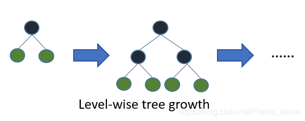
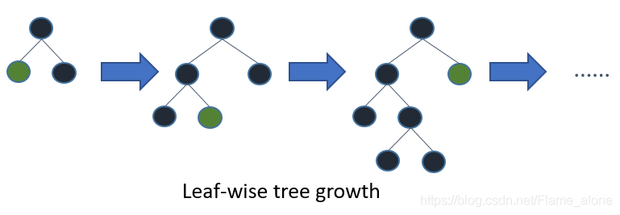

8. XGBoost & LightGBM¶
8.1. XGBoost¶
mathematically, we can write our ensemble tree model in the form
where \(K\) is the number of trees, \(f\) is a function in the function space \(\mathcal{F}\), and \(\mathcal{F}\) is the set of all possible CARTs.
the objective function to be optimized is given by
where \(l\) is the loss term, \(\Omega\) is the regularization term.
8.1.1. Additive Learning¶
what are the parameters of trees? you can find that what we need to learn are those functions \(f_{i}\), each containing the structure of the tree and the leaf scores.
learning tree strcture is much harder than traditional optimization problem where you can simply take the gradient, instead, we use an additive strategy: fix what we learned, and add one new tree at a time. we write the prediction value at step \(t\) as \(\hat{y}_{i}^{(t)}\), then
in general case(\(l\) arbitrary), we take the taylor expansion of the loss function up to the second order
where \(g_{i}\) and \(h_{i}\) are defined as
after removing all the constants, the specific objective at step \(t\) becomes
this becomes our optimization goal for the new tree.
8.1.2. Model Complexity¶
we need to define the complexity of the tree \(\Omega(f)\), in order to do so, let us first refine the definition of the tree \(f(x)\) as
where \(w\) is the vector of scores on leaves, \(q\) is a function assigning each data point to the corresponding leaf, and \(T\) is the number of leaves. in XGBoost, we define the complexity as
this works well in practice.
8.1.3. The Structure Score¶
now we can write the objective value with the \(t\)-th tree as:
where \(I_{j} = \{i|q_{i}=j\}\) is the set of indices of data-points assign to the \(j\)-th leaf.
we could further compress the expression by defining \(G_{j} = \sum_{i\in{I_{j}}}g_{i}, H_{j} = \sum_{i\in{I_j}}h_{i}\):
in this equation, \(w_{j}\) are independent with respect to each other, the form \(G_{j}w_{j} + \frac{1}{2}(H_{j} + \lambda)w_{j}^2\) is quadratic and the best \(w_{j}\) for a given \(q(x)\) and the best objective reduction we can get is:
the last equation measures how good a tree structure \(q(x)\) is.
8.1.4. Learn the Tree Structure¶
now we have a way to measure how good a tree is, ideally we would enumerate all possible trees and pick the best one, but not practical.
instead we will try to optimize one level of the tree at a time, specifically we try to split a leaf into two leaves, and the score gain is:
if the first part of \(Gain\) is smaller than \(\gamma\), we would do better not add that branch, this is exactly pruning!
for real valued data, we places all instances in sorted order(by the split feature), then a left to right scan is sufficient to calculate the structure score of all possible split solutions, and we can find the best split efficiently.
in practice, since it is intractable to enumerate all possible tree structures, we add one split at a time, this approach works well at most of the time.
8.1.5. XGBoost Practice¶
"""quadratic dataset"""
import numpy as np
from sklearn.model_selection import train_test_split
np.random.seed(42)
X = np.random.rand(100, 1) - 0.5
y = 3*X[:, 0]**2 + 0.05 * np.random.randn(100)
X_train, X_val, y_train, y_val = train_test_split(X, y, random_state=42)
"""basic xgboost"""
import xgboost
from sklearn.metrics import mean_squared_error
xgb_reg = xgboost.XGBRegressor()
xgb_reg.fit(X_train, y_train)
y_pred = xgb_reg.predict(X_val)
mean_squared_error(y_pred, y_val)
0.0030701301701716146
"""xgboost automatically taking care of early stopping"""
xgb_reg.fit(X_train, y_train, eval_set=[(X_val, y_val)], early_stopping_rounds=2)
y_pred = xgb_reg.predict(X_val)
mean_squared_error(y_pred, y_val)
[0] validation_0-rmse:0.19678
[1] validation_0-rmse:0.14325
[2] validation_0-rmse:0.10835
[3] validation_0-rmse:0.08482
[4] validation_0-rmse:0.07044
[5] validation_0-rmse:0.06255
[6] validation_0-rmse:0.05927
[7] validation_0-rmse:0.05698
[8] validation_0-rmse:0.05519
[9] validation_0-rmse:0.05513
[10] validation_0-rmse:0.05473
[11] validation_0-rmse:0.05463
[12] validation_0-rmse:0.05427
[13] validation_0-rmse:0.05376
[14] validation_0-rmse:0.05377
[15] validation_0-rmse:0.05363
[16] validation_0-rmse:0.05358
[17] validation_0-rmse:0.05387
0.0028706534131390338
8.2. LightGBM¶
XGBoost uses level-wise tree growth:

while LightGBM uses leaf-wise tree growth:

we can formalize leaf-wise tree growth as:
finding the best split is costly, in XGBoost, we enumerate all features and all thresholds to find the best split.
LightGBM optimize that by using the histogram algorithm: